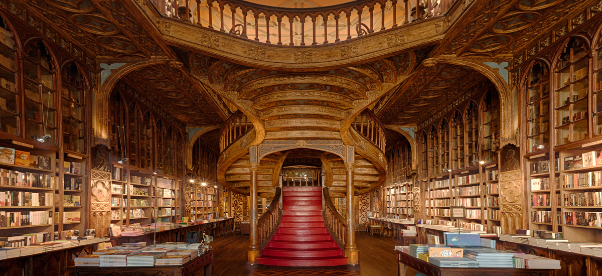
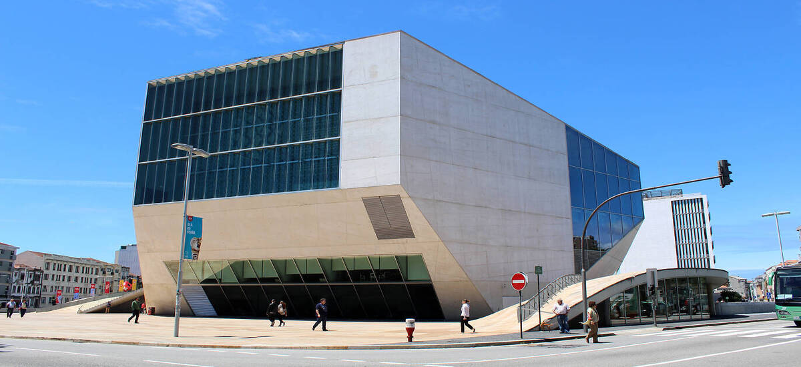
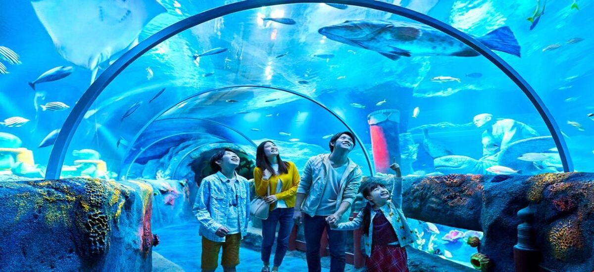

Nesta página iremos apresentar um roteiro para quem deseja conhecer, em apenas um dia, algumas das principais atrações do Porto. A oferta vai desde locais de entrada gratuita até locais com um preço bastante justo.
Museus
Teatros
Monumentos
Restaurantes
Livraria Lello
A Livraria Lello situa-se no número 144 da Rua das Carmelitas, no Centro Histórico da cidade do Porto. Classificada como Monumento de Interesse Público, e em vias de se tornar Monumento Nacional, a Livraria Lello preserva a beleza original do seu edifício. A fachada neogótica, a icónica escadaria vermelha, o emblemático vitral e as estantes repletas de livros das mais diversas épocas e em diferentes idiomas.

Casa da Música
É a principal sala de concertos localizada na Avenida da Boavista, no Porto. Foi projetada pelo arquitecto holandês Rem Koolhaas, como parte do evento Porto Capital Europeia da Cultura em 2001, no entanto, a construção só ficou concluída em 2005, transformando-se imediatamente num ícone da cidade. Possui dois auditórios principais, embora outras áreas do edifício possam ser adaptadas para concertos ou espectáculos.

Sealife
Este aquário público está localizado no Parque da Cidade do Porto e ocupa uma área de cerca de 2400 metros quadrados, albergando cerca de 3000 criaturas marinhas, pertencentes a mais de cem espécies diferentes, em 31 aquários.Em exibição estão tubarões, raias, cavalos-marinhos, polvo e exemplares de peixes tropicais, além de espécies indígenas do rio Douro como os barbos, as trutas, as carpas e os vairões.O maior dos aquários - o "Reino do Neptuno" - tem um túnel subaquático que os visitantes podem atravessar.

Majestic Café
O Café Majestic é um café histórico, localizado na Rua de Santa Catarina. A sua relevância advém tanto da ambiência cultural que o envolve, nomeadamente a tradição do café tertúlia, onde se encontravam várias personalidades da vida cultural e artística da cidade, como também da sua arquitectura de identidade Arte Nova. O Café Majestic idealizado pelo arquitecto João Queiroz, permanece ainda hoje como um dos mais belos e representativos exemplares de Arte Nova na cidade do Porto. Em 2011, foi considerado o sexto café mais bonito do mundo.